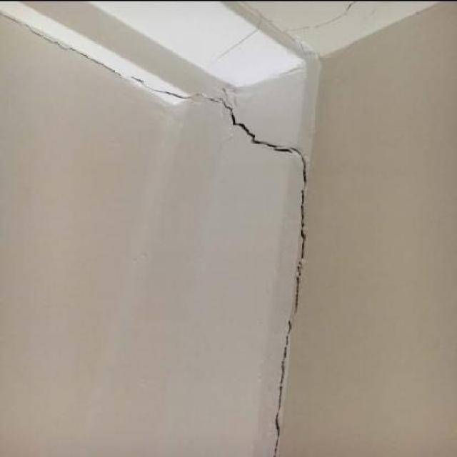
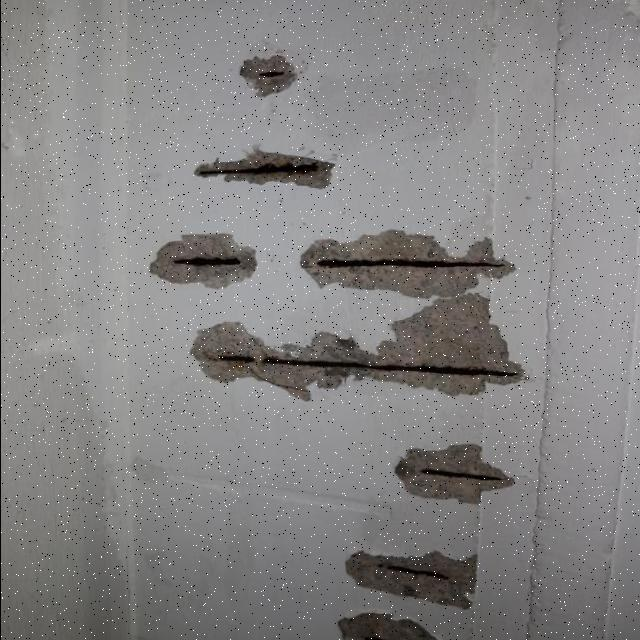
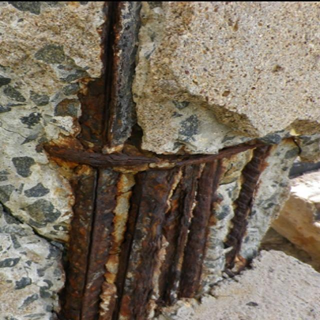
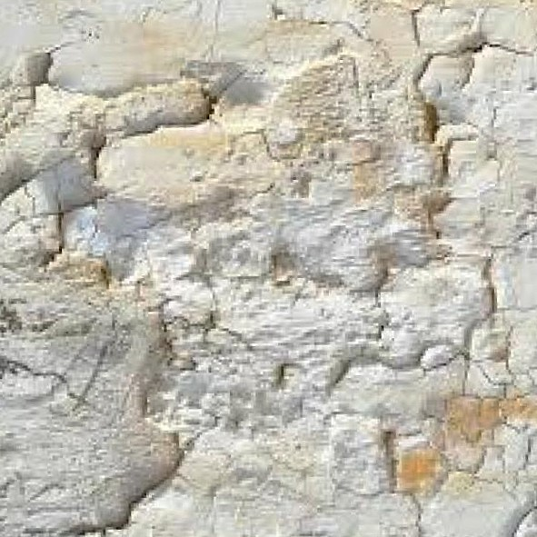
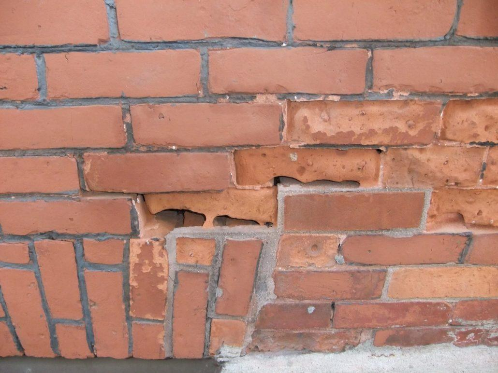
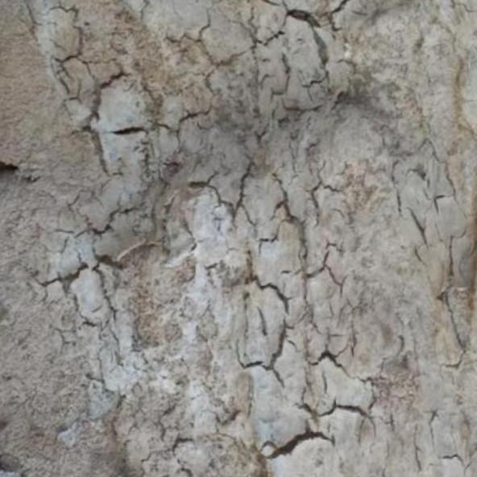
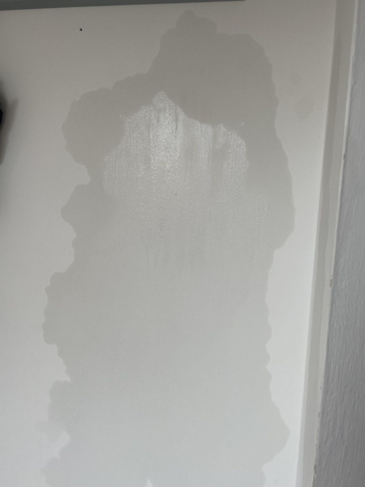
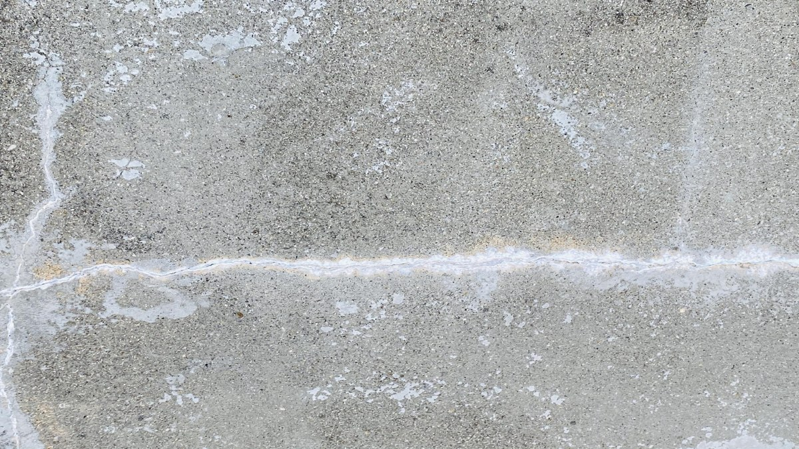
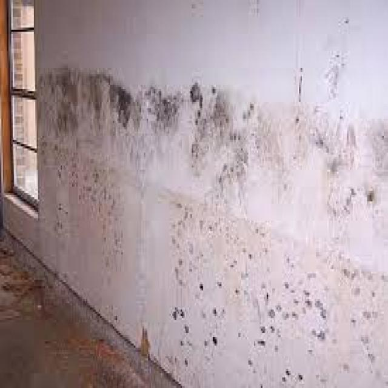
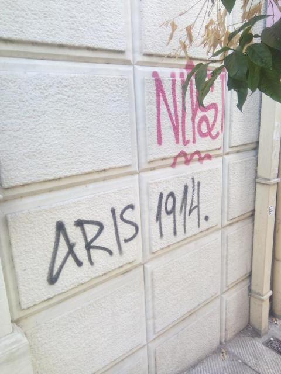

Conocé el estado del edificio antes de entrar
Ya se trate de una edificación dañada, de una estructura cuyo estado genera dudas o de una revisión de rutina, el ingreso para inspeccionarla puede implicar riesgos. Con g1structuralinspector, el primer recorrido lo realiza un robot humanoide Unitree G1, de modo que el profesional accede al lugar contando previamente con la información necesaria.
Cómo funciona
-
Recorrido de la edificación
Desde la aplicación se seleccionan la edificación, la planta y el robot. El Unitree G1 recorre el interior de forma autónoma, construye el mapa de la planta con su sensor LiDAR y fotografía paredes y columnas.
-
Análisis de las imágenes
Cada imagen es analizada por dos modelos de visión artificial: uno detecta si existe daño visible y otro clasifica de qué tipo de daño se trata, entre once categorías.
-
Revisión de hallazgos e informe
Cada hallazgo queda ubicado sobre el plano de la planta. Desde la aplicación, el profesional puede revisarlo, confirmarlo o descartarlo y exportar el informe en PDF.
Todo en una sola aplicación
Plano con los hallazgos
Ves la trayectoria del robot y cada daño en su lugar, con filtros por tipo de daño y por estado de revisión.
Revisión de cada daño
Foto, tipo de daño y confianza del modelo. Confirmás o descartás el hallazgo y anotás qué intervención recomendás.
Informe en PDF
Resumen de la inspección, plano, hallazgos confirmados con sus fotos, intervenciones recomendadas y observaciones del lugar.
Historial por edificación
Cada inspección queda guardada con su fecha, su motivo y el robot que la hizo. En el mapa ves qué edificios tuvieron daños.
Conexión con el robot
Agregás tu Unitree G1, probás la conexión antes de salir y, si hace falta, lo detenés con la parada de emergencia.
Tus datos en la nube
Proyectos, edificios e inspecciones se guardan en tu cuenta. Las imágenes se analizan en tu computadora.
Qué detecta
El sistema reconoce once tipos de deterioro visible. Cada hallazgo queda registrado con su fotografía, su posición en el plano y la confianza del modelo, de modo que el profesional decida con evidencia.
-

Grieta estructural
Fisuras en muros, vigas o columnas.
-

Desprendimiento de hormigón
Pérdida del recubrimiento que puede dejar la armadura expuesta.
-

Corrosión
Óxido en armaduras o elementos metálicos.
-

Delaminación
Separación de capas del material.
-

Pérdida de material
Erosión o faltantes en la superficie.
-

Descascaramiento
Desprendimiento de escamas finas.
-

Humedad
Manchas y daños por filtraciones de agua.
-

Eflorescencia salina
Depósitos blancos de sales.
-

Crecimiento biológico
Moho, hongos o líquenes.
-
Vegetación
Plantas que crecen sobre la estructura.
-

Vandalismo
Grafitis y daños intencionales.
Planes
US$89,99/ mes/ año
Pago mensual.
Pago anual, equivale a US$ 75 por mes.
Preguntas frecuentes
¿Necesito tener un robot?
Sí. La aplicación funciona con el robot humanoide Unitree G1 EDU, que se compra por separado al fabricante. Se conecta por la red local.
¿Reemplaza la evaluación de un profesional?
No. Es una herramienta de apoyo: entrega un relevamiento previo para que el profesional habilitado tome las decisiones con más información y menos exposición.
¿Dónde se analizan las imágenes?
En la computadora del usuario. Los modelos de visión artificial se ejecutan en el equipo donde se instala la aplicación, mientras que en la nube se almacenan los resultados de cada cuenta.
¿En qué computadoras funciona?
En Windows de 64 bits; está probada en Windows 11. El instalador se descarga desde la cuenta del usuario, en este sitio.
¿Puedo compartir una inspección?
Sí. Es posible exportar el informe en PDF o compartir la edificación completa, con sus inspecciones, en un archivo que otra persona importa en su aplicación.